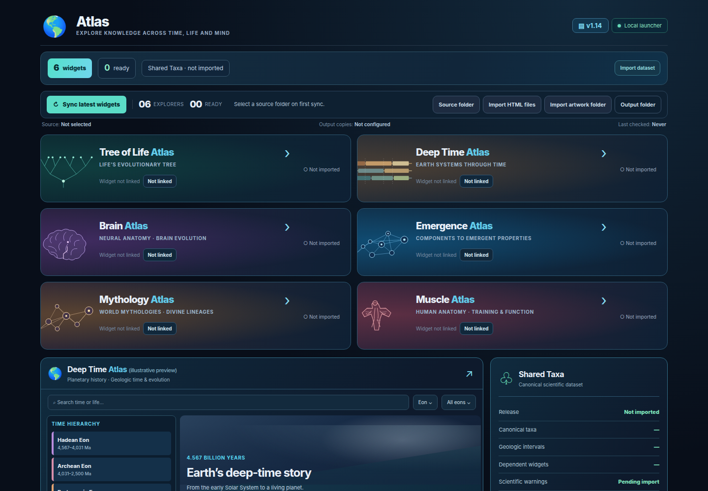
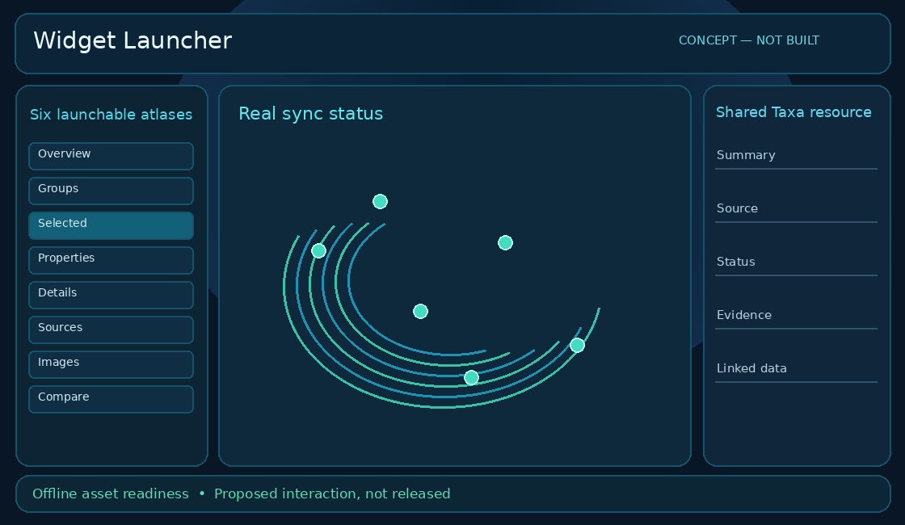

Actual · fresh browser capture

Original widget source unchanged. External HTTP(S) requests blocked for this offline capture.
Goal reference
audit_launcher_concept.png · proposed concept, not approved

Complete · 3
- WL-001 · p1 · done
Import and verify the Atlas baseline. - WL-003 · p1 · done
Maintain a categorized, prioritized live backlog. - WL-004 · p1 · done
Produce actual-versus-goal evidence and open it in feh.
Pending / verify · 24
- WL-005 · p1 · approved
Exercise Atlas browser interactions before visual refactoring. - WL-006 · p1 · approved
Refine the goal-image layout without scientific regressions. - T001 · p1 · needs-verification
Verify existing: Retain compact one-line title/subtitle with responsive natural wrap. - T005 · p1 · needs-verification
Verify existing: Preserve historical changelog entries and click-to-expand version control. - T006 · p1 · needs-verification
Verify existing: Compact statistics typography and balanced rows. - T010 · p1 · proposed
Automate regression for header, popup, versions and mobile breakpoints. - T002 · p1 · proposed
Apply consistent navy gradient with subtle colored subject identity. - T003 · p1 · proposed
Match illustrated reference icon scale and clarity. - T004 · p1 · needs-verification
Verify existing: Align version and data chips, equal control heights. - T007 · p1 · needs-verification
Verify existing: Unify overlay spacing and one-row title/close control. - T008 · p1 · proposed
Consolidate hover/active/selected/focus styles and common green stat emphasis. - I001 · p1 · triage
Close remaining header/hero visual gap. - S022 · p1 · proposed
Standard keyboard, reduced-motion and visual-contrast test plan. - T009 · p2 · proposed
Match reference luminous panel edges and restrained atmospheric fills. - I026 · p2 · triage
Keyboard, contrast and responsive coverage is not maintained as a uniform regression matrix. - T075 · p1 · proposed
Support optional external asset manifests and local artwork bundles. - T076 · p1 · needs-verification
Verify existing: Retain Shared Taxa as nonlaunchable versioned resource. - T077 · p1 · proposed
Regression-test folder sync / imported artwork / IndexedDB in Windows. - I006 · p1 · triage
Test folder sync and persistence on Windows. - S013 · p1 · proposed
Preflight bundled-artwork compatibility before syncing. - T074 · p1 · proposed
Extend illustrated card gradients and status panel polish. - I015 · p1 · triage
Launcher HTML import does not transport external artwork directories. - S010 · p1 · proposed
Dependency and readiness visualization. - S025 · p1 · proposed
Show authoritative package and asset health per widget.